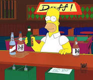

<!DOCTYPE html>
<html lang="en">
<head>
    <meta charset="UTF-8">
    <script src='https://api.mapbox.com/mapbox-gl-js/v2.14.1/mapbox-gl.js'></script>
    <link href='https://api.mapbox.com/mapbox-gl-js/v2.14.1/mapbox-gl.css' rel='stylesheet' />
    <title>Title</title>
    <style>

    </style>
</head>
<body>
  <div id='map' style='width: 100%; height: 900px;'></div>
  <script src="js/keys.js"></script>
  <script src="js/mapbox-geocoder-utils.js"></script></body>

  <script>
      let favRestaurant = [
          {
              name: "Moe's Tavern",
              // address: "-81.468041, 28.478797",
              address: "Moe's Tavern, Universal Studios, Orlando",
              popupHTML: "<h1>Welcome To Moe's!</h1> <p>Enjoy a cold Duff Beer!</p> <p>Homer Simpsons favorite after hour</p> "
          },
          {
              name: "Leaky Cauldron",
              address: "-81.469478, 28.479504",
              popupHTML: "<p>At the Leaky Cauldron, the butterbeer never runs dry!</p>"
          },
          {
              name: "Toothsome Chocolate Factory",
              address: "-81.467568, 28.473028",
              popupHTML: "<p>Toothsome Chocolate Factory\'s \"Red Velvet\" (cupCake w/ vanilla ice cream, raspberry sauce, sprinkles, whip cream, and maraschino cherry) will sweeten your day!</p>"
          }
      ]

    mapboxgl.accessToken = Mapbox_API_Token;
    const map = new mapboxgl.Map({
      container: 'map', // container ID
      style: 'mapbox://styles/mapbox/streets-v12', // style URL
      center: [-81.468041, 28.478797], // starting position [lng, lat]
      zoom: 15, // starting zoom
    });

      function placeMarkerAndPopup(info, token, map) {
          favRestaurant.forEach(function(obj) {
          geocode(obj.address, token).then(function(coordinates) {
              let popup = new mapboxgl.Popup()
                  .setHTML(obj.popupHTML);
              let marker = new mapboxgl.Marker()
                  .setLngLat(coordinates)
                  .addTo(map)
                  .setPopup(popup);
              popup.addTo(map);
          });
          })
      }
      placeMarkerAndPopup(favRestaurant, Mapbox_API_Token, map);
    // geocode("Moe's Tavern, Universal Studios, Orlando", Mapbox_API_Token).then(function (result) {
    //   console.log(result);
    //   map.setCenter(result);
    //   map.setZoom(15);
    //   let marker = new mapboxgl.Marker().setLngLat(result).addTo(map);
    //   let popup = new mapboxgl.Popup().setHTML("<p>Moe's Tavern</p>");
    //   marker.setPopup(popup);
    // });
    //
    // geocode("Leaky Cauldron, Universal Studio, Orlando", Mapbox_API_Token).then(function (result) {
    //     console.log(result);
    //     let marker = new  mapboxgl.Marker().setLngLat(result).addTo(map);
    //     let popup = new mapboxgl.Popup().setHTML(favRestaurant[1]);
    //     marker.setPopup(popup);
    // })
    //
    // geocode("Toothsome Chocolate Factory, Universal Orlando Resort,", Mapbox_API_Token).then(function (result) {
    //     console.log(result);
    //     let marker = new  mapboxgl.Marker().setLngLat(result).addTo(map);
    //     let popup = new mapboxgl.Popup().setHTML(favRestaurant[2]);
    //     marker.setPopup(popup);
    // })


  </script>
</html>